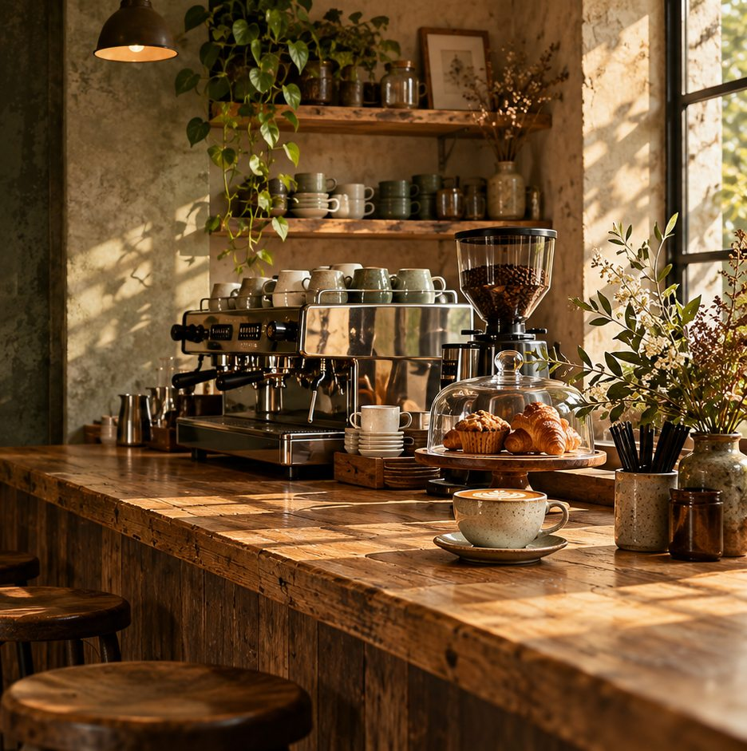

Thoughtful origins
Beans chosen for character, roasted with care.
YOUR NEIGHBORHOOD COFFEE HOUSE
Good coffee, thoughtful food, and a little room to slow down. Your table is waiting.
Explore the menuA LITTLE ABOUT US
We believe the best days begin with a good cup and the people around it. We work with thoughtful growers, bake in small batches, and make every drink with the kind of care you can taste.
Come say hello
Beans chosen for character, roasted with care.
Fresh pastries, made for the day's first cup.
Plant-based milk and a seat at the table.
KIND WORDS, SHARED OVER COFFEE
A few notes from the people who make this place feel like theirs.
“The kind of latte that makes you put your phone away and just enjoy the moment.”
“Warm, welcoming, and that croissant is worth getting out of bed for.”
“My favorite little corner to catch up with a friend. Always lovely, never rushed.”
A little love from our very fictional regulars.
YOUR TABLE IS WAITING
A familiar face, a fresh cup, a little sunshine on the table. There's always room for one more.
Monday – Friday 8am – 8pm
Saturday – Sunday 9am – 6pm